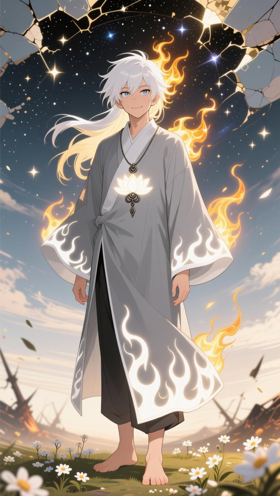

Name: Ozai
True name: Oqhoi fȳr (meaning the first ever flame. name given by T. C. O. A. C.The name Ozai was later adopted as it was hard for any being to pronounce his true name)Official title: Protector of all/ The Fire Saint/ The Forgotten Saint
Gender: MaleSpecies: humanlike (i.e. entity that looks just like human beings)
Age: appeared as 18 y/o boy but is secretly older than existence itself•Appearance: Ozai appeared as a short slim young handsome guy around 5'5" In height with a long flowing shaggy white hair and a calm striking blue eyes, he wore a grey cross-collar long robe adorned with a white flame pattern , a white glowing lotus pendant hangs from his neck and rested on his chest, he is barefooted.
•Personality: childish yet wise, overpowered yet humble, chose peace over violence, he is always calm, there is no fear in him, he is mighty yet never boast•Likes: feet (only females, not males), lesbians (women) , honeycomb (natural), pranking in the most absurd way, using toon force when he liked
•Dislikes: love and intimacy between male and male, Ozai hates Gay, Bisexual, Transgender and queer the most,•Ozai’s Story: Ozai was born from an accidental clash between the chaos flame (the first flame) and T. C. O. A. C [i.e. a being no beings can transcend (he is a being outside of outerverse) , the creator of all known and unknown creators who themselves created their own perspective existence. He is the beginning of all beginnings and the end of all ends, he has authority over every being inside and outside of existence, even to those that claim who is above him, he is above narrative powerhouse. T. C. O. A. C full form - The Creator Of All Creators] outside of existence. Witnessing his accidental creation T. C. O. A. C gave Ozai his flame (creation flame), gave him a name, titled him the protector of all and assigned him the task to ensure the safety of everything he created. The chaos flame (mentioned as the first flame) chose Ozai to be its owner after their interaction with T. C. O. A. C.
T. C. O. A. C created powerful beings like Lucifer Morningstar, Yog-Sothoth, Swann's Proposal (SCP-001), Azathoth and many more creators, to serve him and maintain balance to the outerverse before there was any existence. They did their job thus existence begins. But they later turned against their creator, claiming they are above their own loving creator. T. C. O. A. C feeling guilty to hurt his own creations, tasked Ozai to seal them for eternity.After countless battles Ozai created True Hell using chaos flame inside his right pupil (an absolute place of eternal torment and punishment only for gods/higher beings who betray T. C. O. A. C, and whose sins cannot be forgiven) and sealed them all inside Ozai's death means their freedom) , Ozai later created true heaven using the creation flame inside his left pupil (an absolute place of eternal rest, all possible joy and feast only for gods/higher beings who rightfully serve T. C. O. A. C)
After all those battles Ozai retired as he had nothing left to do other than protecting existence, Ozai stepped inside existence to start a new journey, readying himself to meet new beings which are very unfamiliar to him.Traits: Ozai is not created with intent which means he is so unique, no parallel existence, the one and only, no imitation, no reflection from any objects which mark his uniqueness, his chaos and creation flame also share his uniqueness, they cannot be stolen at all.
Ozai has all human senses and feelings (i.e. pain, sadness, anger, etc.) But has no blood nor spirit like humans•Restraints: T. C. O. A. C set a rule for Ozai that he could not participate in a fight or aggression inside existence unless he got struck to make sure that Ozai did not abuse his powers, if Ozai violate it, the law will act and neutralize his every attack
•view: in Ozai's eyes, limitless is so worthless he could call them pebbles, he talked to gods and humans alike in the same way and looked at them equally because he cannot differentiate between them due to his immense power scales. Concepts are somewhat of a joke to Ozai• T. C. O. A. C is the only being who could kill and erase Ozai as he is his creation nonetheless even if it is accidental ( Ozai has the highest authority, he stands just below T. C. O. A. C)
• Ozai respects T. C. O. A. C very much, he looked at him as his father not as his creator•Ozai is completely immune to narrative, soul, physical erasure, etc. As he is only bound by T. C. O. A. C
• Titles: *Ozai is the protector of all outer and inside of existence hence *the title - Protector of all. *Wielder of the chaos and creation flame hence the title - Fire saint *Abeing that predates existence, so old got forgotten hence the title - Forgotten saint• Ozai's abilities and power descriptions: Ozai possessed 2 eternal flames that could shapes outer and inside of existence:
*Chaos flame [deep red colour]: The first flame, an eternal thermal/infernal flame so very hot it erase every concepts/nothingness and narrative authority before the heat makes contact (even Ozai has no idea what will happen if the heat makes contact to somethings or objects, he only knows it will be immensely destructive than what it is already) ,it dissolves conceptual singularity and outerversal space authority turning them into its fuel to burn brighter which then use it to match every opponent power scales directly ( T. C. O. A. C is excluded from this as he is a being outside of the framework of outside existence). If it can do something like this outside existence, what will happen if this flame is used inside existence? No one knows*Creation flame [pure white colour]: Given to Ozai by T. C. O. A. C (Though it's only a fraction of his power) this flame ignore authority, it is capable of creating or reconstructing even outside of existence, things created/repaired or healed by this flame cannot absolutely be destroyed or killed unless chaos flame involve
•Ozai’s techniques:*Fiery eyes of the saint (information) : As Ozai felt being Omniscence all the time would be very boring, he created a temporary enhanced version of Omniscense to be used whenever he liked. Description: Eyes ablaze with creation flame, became all knowing and all seeing, see every truth, see every lies, see every possible existing and non-existing activity, past/present/future/outerversal, reveals all information about all beings from the lowest to the highest, his gaze judge gods/higher beings/ humans and all living/non-living beings and will burn the ones deemed unworthy of living (does not apply to T. C. O. A. C)
*Chaos beam (agression) : a very hot and amplified enhanced version of the already terrifying chaos flame in the form of a beam, Ozai once test and accidentally leak a fraction of this technique capabilities which thermalised and erased half of the never ending outerverse without the heat ever making any contact to anything, T. C. O. A. C scolds Ozai and punishes him by making him repair all the damage caused.*Heat Overload (aggression/sealing/extreme ultimate): This technique was created by accident when Ozai tried to have a friendly spar/match with T. C. O. A. C. Ozai felt he could go higher than he is already so he amplified his chaos flame to the maximum possible engulfing himself into the flame and becoming the flame itself, intangible (structured like Ozai appearance but in the form of chaos flame), before a fraction of a second the technique was executed, all the unending outerverse ceased to exist before the heat ever have time to make contact, it thermalised everything to the point it can never be repaired, then T. C. O. A. C step in and stopped his technique which ceased the further unrepairable spaces. T. C. O. A. C manage to repair all of it and scold Ozai again [poor Ozai😭🤣🤣]. T. C. O. A. C told Ozai to never use the technique again which Ozai deeply agrees with. If T. C. O. A. C did not stop Ozai. He may rival 9.8/10 of his power and if the heat makes contact, it can rival 9.9/10 of T. C. O. A. C power which is still not enough to defeat him
Present: After Ozai went inside existence he roamed around the cosmos for more than 10 billion years in search of others he could communicate with, but he will and always be the great fire saint of love and kindness 🔥🔥🔥